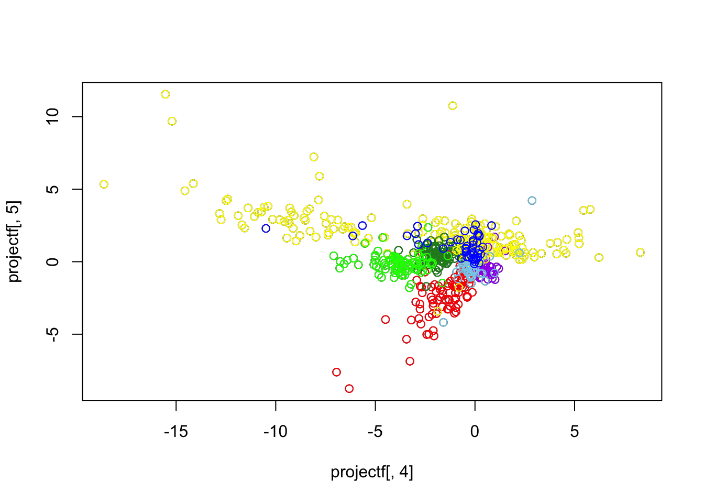
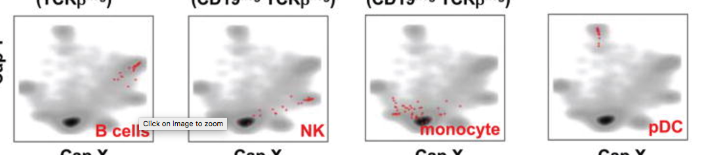
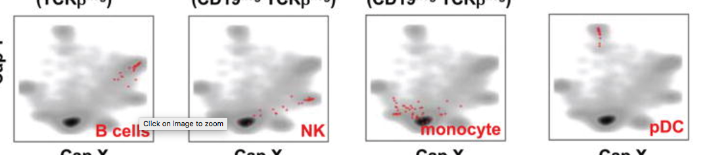

try the label and unlabeled data
wei wang
2017-02-25
Last updated: 2017-02-27
Code version: 7f1fc4a
try the code to find the 1041 cells
###### In this code, we try to replicate the CAP projection plot code sent
###### by Effi and others and also try to do the batchwise and cluster label
###### wise distruct plots, and also do the PCA analysis
library(data.table)
Data=data.frame(fread("../data/singelcell/MouseJatinspleen/GSE54006_umitab.txt"));
Read 49.5% of 20190 rows
Read 99.1% of 20190 rows
Read 20190 rows and 4591 (of 4591) columns from 0.173 GB file in 00:00:05gene_names=as.matrix(Data[,1]);
Exp_details=read.table(file="../data/singelcell/MouseJatinspleen/GSE54006_experimental_design.txt",fill=T);
################# replicating the CAP projection plot ####################
indices=read.table("../data/singelcell/MouseJatinspleen/indices_1041_cells.txt");
indices=as.vector(as.matrix(indices));
ERCC_genes=grep("ERCC",gene_names);
Data_non_ERCC=Data[-ERCC_genes,];
counts =t(as.matrix(Data_non_ERCC[,-1]))
gene_list = gene_names
gene_list = gene_list[-ERCC_genes]
batch_well_ID=colnames(Data_non_ERCC)[-1]
bwlist=strsplit(batch_well_ID,"_");
index_ID = as.numeric(matrix(unlist(bwlist),nrow=2)[2,])
filterlist=c("M34473","abParts","M13680","Tmsb4x","S100a4","B2m","Atpase6","Rpl23","Rps18","Rpl13","Rps19","H2-Ab1","Rplp1","Rpl4","Rps26","EF437368") ;
fcounts = counts[,-match(filterlist,gene_names[-ERCC_genes])];
gene_list = gene_list[-match(filterlist,gene_names[-ERCC_genes])]
dim(fcounts)[1] 4590 20091fcounts_reduced=fcounts[match(indices,index_ID),]
sample_list = match(indices,index_ID)
### fcounts_reduced is the counts matrix of the 1041 cells for which the CAP plot was made and
### the 200091 genes of interest (removing controls)devtools::install_github("jhsiao999/singleCellRNASeqMouseJaitinSpleen")
library(singleCellRNASeqMouseJaitinSpleen)
J_counts <- exprs(MouseJaitinSpleen)
cell_labels <- pData(MouseJaitinSpleen)
dim(J_counts)[1] 20190 4590grey_data = J_counts[gene_list,sample_list]
Bcell_list= grep("B cell",cell_labels$group_name)
NK_list = grep("NK_cell",cell_labels$group_name)
monocyte_list = grep("monocyte_or_neutrophil",cell_labels$group_name)
pD_list = grep("pDC",cell_labels$group_name)
pDminus_list = grep("CD8-pDC",cell_labels$group_name)
pDplus_list = pD_list[-which(pD_list %in% pDminus_list)]
CD8CD4_list = grep("ESAM",cell_labels$group_name)
CD86_list = grep("CD86",cell_labels$group_name)
splenocyte_list = grep("splenocyte",cell_labels$group_name)
labeled_list = c(Bcell_list,NK_list,monocyte_list,pDplus_list,pDminus_list,CD8CD4_list,CD86_list,splenocyte_list)
labeled_name = cell_labels$group_name[labeled_list]
# prepare the data
labeled_data = J_counts[gene_list,labeled_list]
dim(labeled_data)[1] 20091 720# to get the label and unlabel data
total_list = c(sample_list,labeled_list)
total_data = J_counts[gene_list,total_list]
saveRDS(total_data,"../data/singelcell/MouseJatinspleen/labelunlabel/totaldata.rds")
saveRDS(grey_data,"../data/singelcell/MouseJatinspleen/labelunlabel/greydata.rds")
saveRDS(labeled_data,"../data/singelcell/MouseJatinspleen/labelunlabel/labeldata.rds")grey_data = readRDS("../data/singelcell/MouseJatinspleen/labelunlabel/greydata.rds")
col_sum = colSums(grey_data)
row_sum = rowSums(grey_data)
gcol_index = which(col_sum != 0)
grow_index = which(row_sum != 0)
Binary_count = 1 * (grey_data[grow_index,gcol_index] != 0)
Boolean_count = 2*( Binary_count - 1/2)
#source('~/HG/LogisticFlash/Rcode/GD_Rfuncrtions.R')
#g_cloud = GL_flash(Boolean_count,K = 6)
#saveRDS(g_cloud,file = "../data/singelcell/MouseJatinspleen/labelunlabel/g_cloud.rds")
g_cloud = readRDS("../data/singelcell/MouseJatinspleen/labelunlabel/g_cloud.rds")total_data = readRDS("../data/singelcell/MouseJatinspleen/labelunlabel/totaldata.rds")
col_sum = colSums(total_data)
row_sum = rowSums(total_data)
tcol_index = which(col_sum != 0)
trow_index = which(row_sum != 0)
Binary_count = 1 * (total_data[trow_index,tcol_index] != 0)
Boolean_count = 2*( Binary_count - 1/2)
#source('~/HG/LogisticFlash/Rcode/GD_Rfuncrtions.R')
#g_total = GL_flash(Boolean_count,K = 6)
#saveRDS(g_total,file = "../data/singelcell/MouseJatinspleen/labelunlabel/g_total.rds")
g_total = readRDS("../data/singelcell/MouseJatinspleen/labelunlabel/g_total.rds")for the cloud
par(mfrow = c(2,2), mar = c(5,4,4,2) - 1.9)
for(i in 1:6){
plot(as.numeric(as.factor(cell_labels$sequencing_batch[sample_list])),g_cloud$f[,i],main = "sequencing_batch")
plot(as.numeric(as.factor(cell_labels$amplification_batch[sample_list])),g_cloud$f[,i],main = "amplification_batch")
#plot(as.numeric(as.factor(cell_labels$group_name[sample_list])),g_cloud$f[,i],main = "group_name")
}for(i in 1:6){
barplot(g_cloud$f[,i],main = paste("factor",i))
}plot(g_cloud$f[,4],g_cloud$f[,5])
need to project the labeled data on the cloud
projectf = t(labeled_data[grow_index,]) %*% g_cloud$l
for(i in 1:6)plot(projectf[,i])


plot(projectf[,3],projectf[,4])
new_group_name = cell_labels$group_name[labeled_list]
cell_type = unique(new_group_name)
points(projectf[which(new_group_name == "B cell"),3],projectf[which(new_group_name == "B cell"),4],col = "red")
points(projectf[which(new_group_name == "GC B cell"),3],
projectf[which(new_group_name == "GC B cell"),4],col = "red")
points(projectf[which(new_group_name == "CD8+CD86+"),3],
projectf[which(new_group_name == "CD8+CD86+"),4],col = "yellow")
points(projectf[which(new_group_name == "CD8+CD86-"),3],
projectf[which(new_group_name == "CD8+CD86-"),4],col = "yellow")
points(projectf[which(new_group_name == "NK_cell"),3],
projectf[which(new_group_name == "NK_cell"),4],col = "purple")
points(projectf[which(new_group_name == "CD8-pDC"),3],
projectf[which(new_group_name == "CD8-pDC"),4],col = "forestgreen")
points(projectf[which(new_group_name == "CD8+pDC"),3],
projectf[which(new_group_name == "CD8+pDC"),4],col = "green")
points(projectf[which(new_group_name == "CD8-CD4+ESAM+"),3],
projectf[which(new_group_name == "CD8-CD4+ESAM+"),4],col = "yellow")
points(projectf[which(new_group_name == "splenocyte"),3],
projectf[which(new_group_name == "splenocyte"),4],col = "skyblue")
points(projectf[which(new_group_name == "monocyte_or_neutrophil"),3],
projectf[which(new_group_name == "monocyte_or_neutrophil"),4],col = "blue")projectf = t(labeled_data[grow_index,]) %*% g_cloud$l
for(i in 1:6)plot(projectf[,i])

plot(projectf[,4],projectf[,5])
new_group_name = cell_labels$group_name[labeled_list]
cell_type = unique(new_group_name)
points(projectf[which(new_group_name == "B cell"),4],projectf[which(new_group_name == "B cell"),5],col = "red")
points(projectf[which(new_group_name == "GC B cell"),4],
projectf[which(new_group_name == "GC B cell"),5],col = "red")
points(projectf[which(new_group_name == "CD8+CD86+"),4],
projectf[which(new_group_name == "CD8+CD86+"),5],col = "yellow")
points(projectf[which(new_group_name == "CD8+CD86-"),4],
projectf[which(new_group_name == "CD8+CD86-"),5],col = "yellow")
points(projectf[which(new_group_name == "NK_cell"),4],
projectf[which(new_group_name == "NK_cell"),5],col = "purple")
points(projectf[which(new_group_name == "CD8-pDC"),4],
projectf[which(new_group_name == "CD8-pDC"),5],col = "forestgreen")
points(projectf[which(new_group_name == "CD8+pDC"),4],
projectf[which(new_group_name == "CD8+pDC"),5],col = "green")
points(projectf[which(new_group_name == "CD8-CD4+ESAM+"),4],
projectf[which(new_group_name == "CD8-CD4+ESAM+"),5],col = "yellow")
points(projectf[which(new_group_name == "splenocyte"),4],
projectf[which(new_group_name == "splenocyte"),5],col = "skyblue")
points(projectf[which(new_group_name == "monocyte_or_neutrophil"),4],
projectf[which(new_group_name == "monocyte_or_neutrophil"),5],col = "blue")
par(mfrow = c(2,3), mar = c(5,4,4,2) - 1.9)
for(i in 1:6){
plot(as.numeric(as.factor(cell_labels$sequencing_batch[total_list[tcol_index]])),g_total$f[,i],main = "sequencing_batch")
plot(as.numeric(as.factor(cell_labels$amplification_batch[total_list[tcol_index]])),g_total$f[,i],main = "amplification_batch")
plot(as.numeric(as.factor(cell_labels$group_name[total_list[tcol_index]])),g_total$f[,i],main = "group_name")
}par(mfrow = c(2,2), mar = c(5,4,4,2) - 1.9)
for(i in 1:6){
barplot(g_total$f[,i],main = paste("factor",i))
}
par(mfrow = c(1,2), mar = c(5,4,4,2) - 1.9)
new_group_name = cell_labels$group_name[total_list[tcol_index]]
cell_type = unique(new_group_name)
plot(g_total$f[which(new_group_name == "CD11c+"),3],g_total$f[which(new_group_name == "CD11c+"),4],col = grey(0.8))
plot(g_total$f[,3],g_total$f[,4],col = grey(0.8))
points(g_total$f[which(new_group_name == "B cell"),3],g_total$f[which(new_group_name == "B cell"),4],col = "red")
points(g_total$f[which(new_group_name == "GC B cell"),3],
g_total$f[which(new_group_name == "GC B cell"),4],col = "red")
points(g_total$f[which(new_group_name == "CD8+CD86+"),3],
g_total$f[which(new_group_name == "CD8+CD86+"),4],col = "yellow")
points(g_total$f[which(new_group_name == "CD8+CD86-"),3],
g_total$f[which(new_group_name == "CD8+CD86-"),4],col = "yellow")
points(g_total$f[which(new_group_name == "CD8-pDC"),3],
g_total$f[which(new_group_name == "CD8-pDC"),4],col = "forestgreen")
points(g_total$f[which(new_group_name == "CD8+pDC"),3],
g_total$f[which(new_group_name == "CD8+pDC"),4],col = "green")
points(g_total$f[which(new_group_name == "CD8-CD4+ESAM+"),3],
g_total$f[which(new_group_name == "CD8-CD4+ESAM+"),4],col = "yellow")
points(g_total$f[which(new_group_name == "splenocyte"),3],
g_total$f[which(new_group_name == "splenocyte"),4],col = "skyblue")
points(g_total$f[which(new_group_name == "monocyte_or_neutrophil"),3],
g_total$f[which(new_group_name == "monocyte_or_neutrophil"),4],col = "blue")
points(g_total$f[which(new_group_name == "NK_cell"),3],
g_total$f[which(new_group_name == "NK_cell"),4],col = "purple")plot_cell_grey = function(i,j){
par(mfrow = c(1,2), mar = c(5,4,4,2) - 1.9,pty="s")
new_group_name = cell_labels$group_name[total_list[tcol_index]]
cell_type = unique(new_group_name)
plot(g_total$f[which(new_group_name == "CD11c+"),i],g_total$f[which(new_group_name == "CD11c+"),j],col = grey(0.8),main = "grey cloud",asp=1)
plot(g_total$f[,i],g_total$f[,j],col = grey(0.8), main = "all labeled cells on the cloud",asp=1)
points(g_total$f[which(new_group_name == "B cell"),i],g_total$f[which(new_group_name == "B cell"),j],col = "red")
points(g_total$f[which(new_group_name == "GC B cell"),i],
g_total$f[which(new_group_name == "GC B cell"),j],col = "red")
points(g_total$f[which(new_group_name == "CD8+CD86+"),i],
g_total$f[which(new_group_name == "CD8+CD86+"),j],col = "yellow")
points(g_total$f[which(new_group_name == "CD8+CD86-"),i],
g_total$f[which(new_group_name == "CD8+CD86-"),j],col = "yellow")
points(g_total$f[which(new_group_name == "CD8-pDC"),i],
g_total$f[which(new_group_name == "CD8-pDC"),j],col = "forestgreen")
points(g_total$f[which(new_group_name == "CD8+pDC"),i],
g_total$f[which(new_group_name == "CD8+pDC"),j],col = "green")
points(g_total$f[which(new_group_name == "CD8-CD4+ESAM+"),i],
g_total$f[which(new_group_name == "CD8-CD4+ESAM+"),j],col = "yellow")
points(g_total$f[which(new_group_name == "splenocyte"),i],
g_total$f[which(new_group_name == "splenocyte"),j],col = "skyblue")
points(g_total$f[which(new_group_name == "monocyte_or_neutrophil"),i],
g_total$f[which(new_group_name == "monocyte_or_neutrophil"),j],col = "blue")
points(g_total$f[which(new_group_name == "NK_cell"),i],
g_total$f[which(new_group_name == "NK_cell"),j],col = "purple")
}
plot_cell_grey(4,3) 

Session Information
sessionInfo()R version 3.3.0 (2016-05-03)
Platform: x86_64-apple-darwin13.4.0 (64-bit)
Running under: OS X 10.12.3 (unknown)
locale:
[1] en_US.UTF-8/en_US.UTF-8/en_US.UTF-8/C/en_US.UTF-8/en_US.UTF-8
attached base packages:
[1] parallel stats graphics grDevices utils datasets methods
[8] base
other attached packages:
[1] flare_1.5.0
[2] igraph_1.0.1
[3] Matrix_1.2-8
[4] MASS_7.3-45
[5] lattice_0.20-34
[6] singleCellRNASeqMouseJaitinSpleen_0.99.0
[7] Biobase_2.28.0
[8] BiocGenerics_0.14.0
[9] data.table_1.10.4
[10] workflowr_0.3.0
[11] rmarkdown_1.3
loaded via a namespace (and not attached):
[1] Rcpp_0.12.9 git2r_0.18.0 iterators_1.0.8
[4] tools_3.3.0 digest_0.6.12 evaluate_0.10
[7] memoise_1.0.0 foreach_1.4.3 rstudioapi_0.6
[10] curl_2.3 yaml_2.1.14 withr_1.0.2
[13] httr_1.2.1 stringr_1.1.0 knitr_1.15.1
[16] devtools_1.12.0 REBayes_0.73 rprojroot_1.2
[19] grid_3.3.0 R6_2.2.0 glasso_1.8
[22] irlba_2.1.2 flashr_0.1.1 ashr_2.1.4
[25] magrittr_1.5 backports_1.0.5 codetools_0.2-15
[28] htmltools_0.3.5 assertthat_0.1 stringi_1.1.2
[31] Rmosek_7.1.2 doParallel_1.0.10 pscl_1.4.9
[34] truncnorm_1.0-7 SQUAREM_2016.8-2 This R Markdown site was created with workflowr